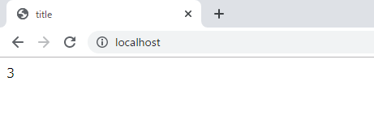
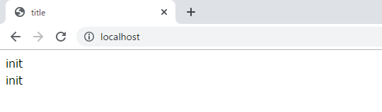
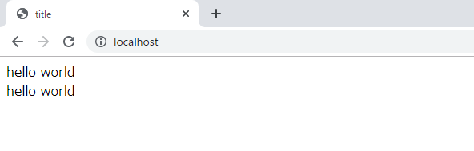

[PHP] functionとclass使用方法、アクセス修飾子、そしてstatic
こんにちは。明月です。
PHPは基本的にスクリプト言語なので、javascriptみたいに「function」と「class」を宣言しなくてもPHPページを作ることができます。
でも、最近ウェブプログラムはデータベースからデータを読み込んでそのままにウェブサービスに書き出すことではなく、複雑な計算と様々なデータを総合的に見せるポータルプログラム形式が多いのでかなり複雑に作成することになります。
その時に単純にデータベースあるいはファイルなどからデータを読み込んで計算しながらウェブページに掲示すればプログラムがかなり複雑になるし再使用性がたくさん落ちることになります。
それでfunction(関数)やclass形式な構造が必要です。
先、functionの構造は「java」と「C#」みたいに返却タイプがあることではなく、「javascript」みたいにないですね。初めからphpは変数宣言する時もデータタイプを宣言することではないからだと思いますね。
「javascript」と似てるな構造になります。
<?php
$title = "title";
// 関数はfunctionで始まって別に返却データタイプを設定しない。
function sum($a, $b) {
return $a + $b;
}
// 関数を使って結果は「3」になる。
$data = sum(1,2);
?>
<!DOCTYPE html>
<html>
<head>
<title>
<?=$title?>
</title>
</head>
<body>
<?=$data?>
</body>
</html>

PHPでクラスの構造は一般OOPプログラムと似てます。メンバー変数があるし、関数がある構造になります。
<?php
$title = "title";
class Test {
// メンバー変数 (アクセス修飾子が必須)
private $data;
// コンストラクタ (他の言語みたいにクラス名と同じ名ではなく、「__construct」の関数名で決めている。)
function __construct() {
//メンバー変数にアクセス (必ず$thisが必要。$dataで宣言すれば内部ローカル変数になる。)
$this->data = "init";
}
// 関数
public function setData($value) {
// 内部ローカル変数
$data = $value;
}
// 関数
public function print(){
echo $this->data;
}
}
$obj = new Test();
// コンストラクタパラメータがなければ、()は省略可能
$obj1 = new Test;
// 内部ローカル変数にデータを入れたので、print関数を呼び出しても「init」で出力する。
$obj1->setData("hello world");
?>
<!DOCTYPE html>
<html>
<head>
<title>
<?=$title?>
</title>
</head>
<body>
<?=$obj->print()?>
<br />
<?=$obj1->print()?>
</body>
</html>
ここでメンバー変数で「private」というアクセス修飾子を使いました。クラス内部の関数の場合はアクセス修飾子が必須ではないですが、メンバー変数には必ずアクセス修飾子が必要です。
アクセス修飾子は「private」、「protected」、「public」があります。「private」の場合はインスタント外部でアクセス禁止、「protected」の場合はインスタントの内部、派生クラスの関数だけでアクセスができます。「public」の場合はインスタントの外部、内部でとこでもアクセスができます。
| 区分 | アクセス修飾子 | 説明 |
|---|---|---|
| アクセス権限 | public | すべてクラスでアクセスが可能です。 |
| private | クラス内だけアクセスが可能です。 | |
| protected | クラスと派生クラス関係のクラスによってアクセスが可能です。 |
link - [Java スタディ - 11] アクセス修飾子
link - [C# スタディ - 13] アクセス修飾子(public, private, protected)
関数の場合はアクセス修飾子が必須ではないですが、クラスのカプセル化で構成するようにはアクセス修飾子が必要です。
クラスのコンストラクタはJavaやC#みたいにクラスと同名で作成することではなく、__constructの関数名が定義されています。
そして関数の内でメンバー変数をアクセスするようには必ず「$this」のキーワードを使用して「$this->変数名」でアクセスすればよいです。
PHPには別に変数宣言方法がないので、「$this」を省略することになるとローカル変数になります。筆者もたまにミスする領域ですが、変数を間違って参照してバグが発生する時があります。
インスタンスを生成する時にはコンストラクトがない場合は「()」を省略してもよいですが、ソースの可読性のため、必ず書いているのが良いと思います。

PHPでもインスタンスを生成するのは「new」キーワードで生成します。OOPと似ているな構造になりますね。
しかし内部的には「OOP」と動作方法は差がありますが、実装する形は似ているので初心者がPHPを初めに勉強するのはしやすいと思います。
<?php
$title = "title";
class Test {
private static $data;
public static function setData($value) {
// メンバー変数ではないので、staticでアクセスする。
Test::$data = $value;
}
public static function print(){
echo Test::$data;
}
}
// staticはインスタンスによってアクセスではないので、「クラス名::関数名あるいは変数名」でアクセスする。
Test::setData("hello world");
?>
<!DOCTYPE html>
<html>
<head>
<title>
<?=$title?>
</title>
</head>
<body>
<?=Test::print()?>
</body>
</html>

上の例をみればstaticもparentと似ている構造でアクセスします。「クラス名::変数名」あるいは「クラス名::関数名」でアクセスします。
上の例は「static」変数でもアクセス修飾子が「private」なので、インスタンス内部だけでアクセスできますね。
- [PHP] 分散設定ファイル(.htaccess) 使用方法2020/01/28 03:00:00
- [PHP] データベース(mariaDB)を連結して使う方法2020/01/24 03:00:00
- [PHP] IOに関して2020/01/23 03:00:00
- [PHP] requireとinclude、そして「@」の使用方法2020/01/22 03:00:00
- [PHP] Fatal及びNotice,、Warningメッセージ処理する方法2020/01/19 03:00:00
- [PHP] xDebug設定する方法2020/01/18 03:00:00
- [PHP] $_SERVER, $GLOBALS, $_GET, $_POST, $_REQUEST, $_COOKIE, $_SESSION, $_FILES, $_ENV(getenv())2020/01/17 03:00:00
- [PHP] データ確認関数(var_dump, debug_zval_dump, print_r)2020/01/16 03:00:00
- [PHP] 例外処理(try ~ catch ~ finally)2020/01/15 03:00:00
- [PHP] 配列とリスト(list)2020/01/14 03:00:00
- [PHP] インタフェースと抽象クラス、クラス継承、parent、this2020/01/13 03:00:00
- [PHP] functionとclass使用方法、アクセス修飾子、そしてstatic2020/01/09 23:35:27
- [PHP] 基本ページ作成方法と変数使用方法2020/01/06 23:44:20
- [PHP] Composer設定2019/12/27 08:49:09
- [PHP] PHP 開発環境設定とEclipse(IDE)の設定2019/12/26 07:36:47
- [PHP] 分散設定ファイル(.htaccess) 使用方法2020/01/28 03:00:00
- [PHP] データベース(mariaDB)を連結して使う方法2020/01/24 03:00:00
- [PHP] IOに関して2020/01/23 03:00:00
- [PHP] requireとinclude、そして「@」の使用方法2020/01/22 03:00:00
- [PHP] Fatal及びNotice,、Warningメッセージ処理する方法2020/01/19 03:00:00
- [PHP] xDebug設定する方法2020/01/18 03:00:00
- [PHP] $_SERVER, $GLOBALS, $_GET, $_POST, $_REQUEST, $_COOKIE, $_SESSION, $_FILES, $_ENV(getenv())2020/01/17 03:00:00
- [PHP] データ確認関数(var_dump, debug_zval_dump, print_r)2020/01/16 03:00:00
- [PHP] 例外処理(try ~ catch ~ finally)2020/01/15 03:00:00
- [PHP] 配列とリスト(list)2020/01/14 03:00:00
- [PHP] インタフェースと抽象クラス、クラス継承、parent、this2020/01/13 03:00:00
- [PHP] functionとclass使用方法、アクセス修飾子、そしてstatic2020/01/09 23:35:27
- [PHP] 基本ページ作成方法と変数使用方法2020/01/06 23:44:20
- [PHP] Composer設定2019/12/27 08:49:09
- [PHP] PHP 開発環境設定とEclipse(IDE)の設定2019/12/26 07:36:47